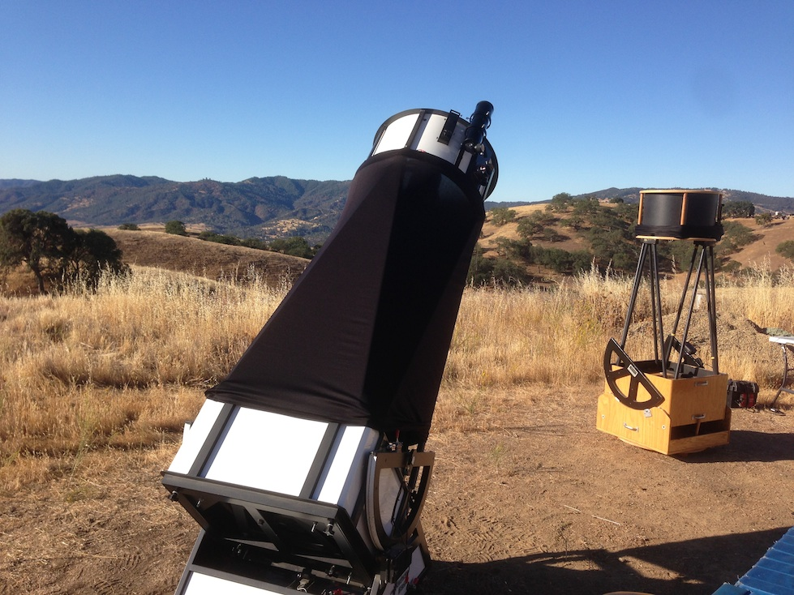
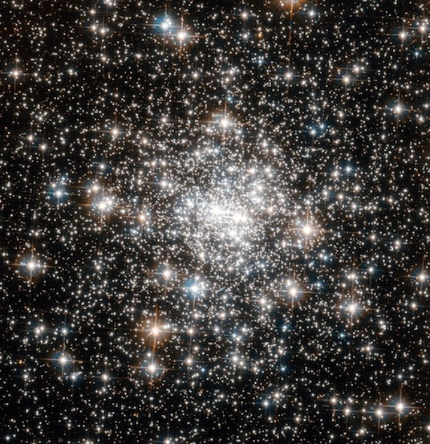
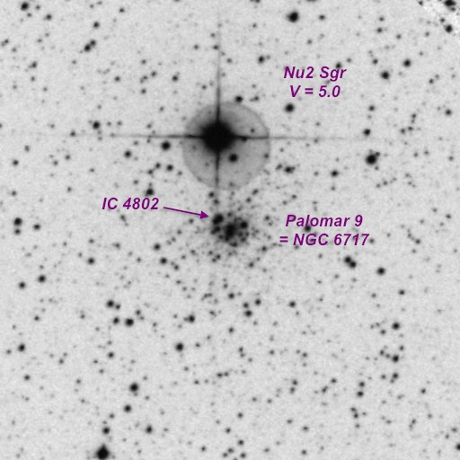
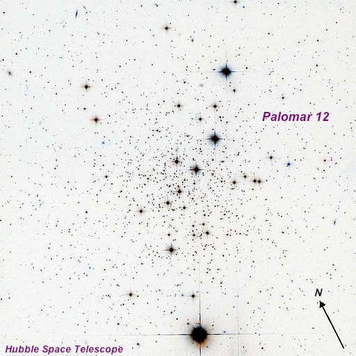
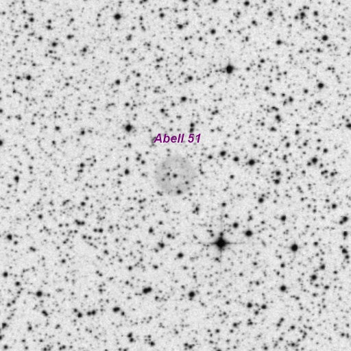
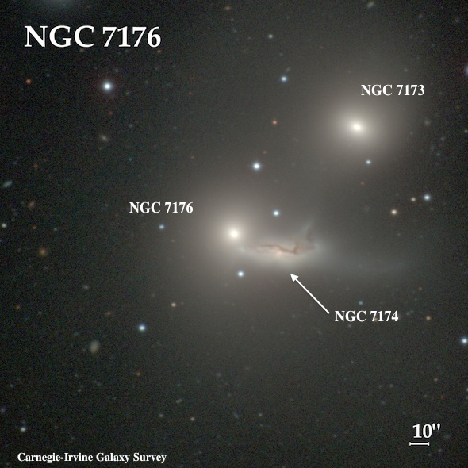
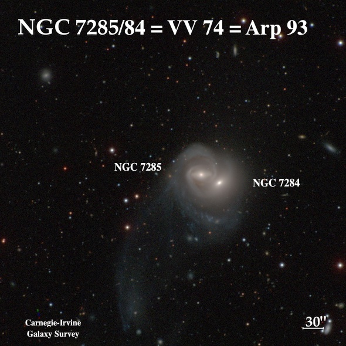
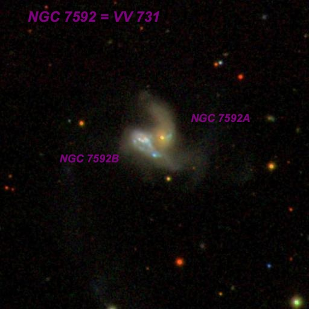
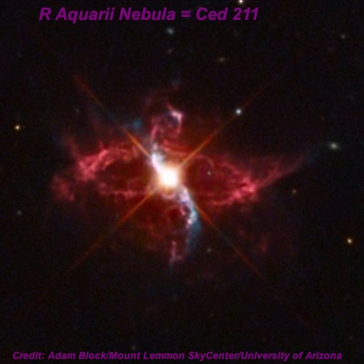

OR Willow Springs
OR 8/23/14: Willow Springs by Steve Gottlieb
On August 23 2014, I met Mark Wagner and Mark Johnston at Bob Ayers' Willow Springs property, roughly 30 miles southeast of Hollister and perhaps 20 miles northwest of Pinnacles National Park. Here's the view from this 3000 ft site, looking south over the rolling hills of rural San Benito county with my scope in the foreground (24-inch f/3.7 Starstructure) along with Mark Johnston's 18" f/3.7 Starmaster. Wagner and I had some equipment issues during set-up -- Mark discovered he forgot a battery as well as his finder and I had electrical issue causing a short in my Servocat system. Fortunately, with some help from Mark Johnston the issues were resolved before it was fully dark.Observing conditions were good with no wind, clouds or moisture though the transparency was on the low end of typical SQM readings (21.4-21.6) at this site (situated in a dark blue light pollution zone). I observed until 3:00 and then crashed out in my minivan. All in all, a very relaxing, productive evening! The following Wednesday I was off again to observe at Lake Sonoma - more on that adventure in my next report.


This fairly bright gc contains a very bright core and an irregular 2' halo. At 375x, stars stream out to the east and west creating an impression of elongation. The core is very lively and a few brighter stars are clearly resolved, though packed together very tightly. Roughly 20 stars are resolved in the halo. At 500x, 30-35 stars are resolved (many popping in/out of view) including 8-10 in a clump at the center and close to the core. A single brighter star is just south of the core and a nice pair (~3" separation) is in the halo on the NNE side. A string of stars extends out of the cluster to the north. Easily visible in the 80mm finder at 25x and the finder field contains M22 just 1.1° SE. This HST image only includes the central core region of the globular!

I viewed this unusual globular -just 2' S of Nu2 Sgr - at 375x and 500x. The "core" appeared as a fairly circular, fairly smooth glow, ~1' diameter, with a half-dozen stars superimposed. With extended viewing a very low surface, irregular halo was noticed that increased the diameter to perhaps 2.5'. At the center is in unequal pair oriented N-S (~5" separation), with the southern component, brighter and quasi-stellar. A second pair of mag 14 stars at ~5" separation is on the NE side (this is IC 4802 ). A mag 16 star is 10" S of this pair. Finally, another mag 14 star is at the WNW side of the core.

Picked up at 200x as a very low surface brightness 2.0'-2.5' glow, peppered with a few stars and a slightly brighter "core" region. At 375x-500x, the brightest mag 14.6 star is on the northwest side with a mag 14.8 star 0.6' SE . A 12" pair of mag 15.2/15.9 stars is near the geometric center (20" SE of the mag 14.8 star) and a mag 16-16.5 star was glimpsed on the northeast side. A brighter mag 14 star is off the northwest side and probably not a member. Pal 12 is situated 2' northwest of a striking mag 11/12 triple, including a 19" pair of mag 11.7/12.3 stars.

Using 200x and NPB filter, Abell 51 appeared very faint but visible continuously, round, crisp-edged, nearly even surface brightness. Also viewed at 225x (with filter) and a couple of superimposed stars were glimpsed. At 375x unfiltered, two mag 15-15.5 stars oriented SW-NE were clearly visible at the position of the planetary. Checking ALADIN afterwards, one is a mag 15.3 star at the SW end and the other is the mag 15.4 central star.

This bright, compact triplet is part of the HCG 90 quartet, along with NGC 7172 . At 375x, NGC 7173 = KTS 66A = HCG 90C appeared bright, moderately large, round, 45" diameter. Contains a relatively large, very bright core that gradually increases to the center. NGC 7174 /7176 (contact pair) is less than 1.5' southeast. NGC 7174 = KTS 66B = HCG 90D is elongated perhaps 3:1 E-W, 0.9'x0.3'. The surface brightness is irregular with no core region. The galaxy appears to taper and brighten at the west end with a bend or short kink angling northwest. The east end merges into the halo of NGC 7176 on the its southwest end. NGC 7176 = KTS 66C = HCG 90B appeared very bright, moderately large, round, 1.0' diameter, intense core that increases to the center, which contains a bright, stellar nucleus. NGC 7172, just 7' NNW, completes the HCG 90 quartet. This galaxy was logged as moderately bright, fairly large, elongated 5:2 WNW-ESE, ~1.5'x0.6', increases in size with averted. Contains a brighter, elongated core that bulges slightly and the halo has a sharper edge along with south edge.

NGC 7284 is the western component of this double system. At 375x, it appeared bright, small, round, high surface brightness, ~0.4' diameter. The core of NGC 7285 is cleanly resolved [33" between center], though very close northeast. The twin nuclei are encased in a very low surface brightness halo. NGC 7285 is fairly bright, small, elongated 3:2 E-W, 30"x20", high surface brightness.

Using 375x, this interacting pair appeared fairly faint, fairly small, irregular. With careful viewing, the highest surface brightness component is the core of the eastern galaxy (identified as NGC 7592B = Mrk 928 in NED), with most of the glow extending southwest, creating an asymmetric appearance. The nucleus of the western galaxy (identified as NGC 7592A in NED) appeared faint and extremely small, perhaps 5" diameter. The arm or wing to its north was not seen. The two nuclei are separated by only 13" as measured on ALADIN.

At 375x, two thin "wings" or thin extensions were clearly visible extending WSW and ENE from R Aquarii. The ENE spike was seen first, so was very likely brighter and the WNW extension was not as sharply defined. At 200x, the star had a definite pale orange color, though the color was washed out at higher power. I didn't compare views with a filter, but some reports indicate a mild improvement.